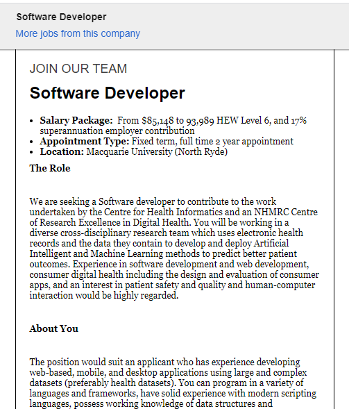

Mathew Lawton
An introduction to myself and my interest in IT.
As far back as I can remember I have always wanted to help people, build things, fix things, be creative and make people happy. Living my life alongside these principles have led to many amazing opportunities, countries, people, characters, conversations and perspectives that has led me here to RMIT.
A person who has constantly inspired and amazed me throughout my journey of life is Nikola Tesla, he was the first person who I could not understand and really sparked my curiousity for science and technology.
Learning about basic electrical currents in primary school was a memorable experience, during High School my friends and I became involved in BMX and fell in love with the culture that surrounded it and in our small coastal town of Western Australia I started making T-shirts and stickers at home that I sold at school, I used the money to buy bus tickets so we could all go on road trips to the big smoke(Perth, W.A.) for BMX competitions. 10 years later I was the owner/operator of Australia’s second largest BMX manufacturer and distributor to over 27 countries, Tempered Bikes pty ltd.I have never stopped wanting to help people, build things, fix things and make people happy and I have never stopped being inspired by Nikola Tesla, Carl Sagan, nature, space, people innovating healthcare, stories of courage and articles about women and men who make great impacts in the world by sometimes starting somewhere small.
And here I am, a student at RMIT!
By the way, how was Nikola Tesla able to predict the internet?
During my time with RMIT I will work towards completing a bachelor’s degree in Computer Science, meet new people and endeavour to build a strong network of support within the IT communities and my peers at RMIT for a better future for my Family, friends and everyone I haven’t met yet who will inspire me in new ways to help me learn and achieve my goal of becoming a Software Developer within the Australian Healthcare industry.
My Ideal Job!
Click here for the URL link to my ideal job on SEEK.
Why is this job ideal to me?
This position of Software Developer at the Health Analytics Lab at Macquarie University is my ideal job as I feel that it is driving down the same road as the principles I drive my life down. I will have the opportunity to design, test and produce software based on the user specifications for the Health Analytics Lab to collate and store patient data.
I will endeavour to regularly identify, design, develop and implement improvements to work procedures, practices, systems and/or techniques. Have the opportunity to be involved in conducting regular performance testing and maintenance on software tools and resolve and identify bugs or issues. Participate in regular check-ins and report to Senior Research Fellow on projects and ensure that concerns and risks are raised.
Following this I have the chance to further support my team and peers by performing any other duties outside of the job/position classification in order to achieve overall team success.
PROS: - Working within the multi-disciplinary team will expose me to a lot of learning opportunities and friendships that can help me grow my career in this field.
CONS: - The feasibility of relocation and type of impact relocation may have on my family.
What are some of the skills and qualifications required?
The position of Software Developer requires a Tertiary qualification in Computer science or related field.
Applicants must be;
- Competent in being able to achieve objectives successfully through proper time management and use of correct resources.
- Applicants must focus and provide accuracy and quality at all times.
- Through the proper formal methods of communication will convey ideas and concepts to others and be able to understand those of their peers more effectively.
- Endeavor to find new and better was of completing tasks and solving problems.
- Persevere and overcome all, if any, obstacles that may arise in order to achieve task completion.
- For team success in an unexpected and challenging environment applicants must be flexible and consider the flexibility of my peers who must be able to rely and depend on me to meet commitments and responsibilities.
- Where ever necessary if an issue arises applicants must be competent in taking action on their own accord and address issue’s and also prevent the issue from arising again.
- Adhere to the required standards of confidentiality, discretion and professionalism.
Applicants must also be be experienced and have knowledge in the following areas;
- Software development and project management approaches, methods and tools. - Writing code in a service orientated architecture.
- Software programming languages including R, Python, C++, Java skills. - Competency in Linux.
- Possess strong knowledge and interest in computational skills.
- Web development in one or more languages with experience in both front-end and back-end development.
- Have an understanding of data structures and algorithms.
What kind of skills and quals do i currently have?
- I am competent in being able to achieve objectives successfully through proper time management and use of correct resources.
- My passion and drive for this field will help me to always focus on delivering quality and accuracy. With my current experience and understanding of IT and Computer Science I currently do not have the experience, skills, or qualifications for my ideal job.
- I will maintain my personal level of integrity and adhere to the required standards of confidentiality, discretion and professionalism in order to achieve success.
What is my plan of attack for obtaining the information on how to learn and gain the skills and quals in order for me to get the job?
As I am currently working towards a bachelor’s in computer science with RMIT I will have the best opportunity to build a strong network of support within the IT communities and my peers at RMIT which will allow me to learn, obtain and grow my skills knowledge and experience within the IT industry so I may pursue a bachelor’s degree that can lead to a career within this field.
I will focus on obtaining and growing my skills in the following areas
- Learning IT and Computer science from the ground up.
- Understanding software and tools.
- Understand how to plan, create and build software.
- Understand Machine Learning and Artificial Intelligence.
- Understand the ethics of collecting and storing data.
- Learn about the legality of obtaining data within the Healthcare industry.
- Become proficient in the use of tools such as MS Teams, Skype, Collaborate Ultra etc.
- Learning about HTML, CSS, R, Python, C++ and Java.
- Become competent with Linux systems.
- Grow my passion for Computer Science.
- Gain experience in web development both Front-end and Back-end.
- Train myself to become familiar with Algorithms and data structure’s.
Below you will find the results from my online tests!
Myers-Briggs Online test results

I did not know what a protagonist was until I took the Myers-Briggs test. I don’t believe these results will influence my behaviour to change in a team environment, I have always taken the time to consider the thoughts and ideas of my peers. I believe that being a great member of a team means that everybody should have an equal opportunity to express their ideas and thoughts therefore I do not believe my results really matter or would influence my outlook on teamwork.
Learning Styles test results.
Check out the full results by Clicking Here.
I think these results are great, it shows me how I learn, and which styles may be more beneficial to me, knowing this can be great. I believe it shows that I am able to use all forms of learning and use these methods to tackle issues that may arise within the team environment and be able to support my peers more efficiently.
Situational Judgement test results.
I think these results are also great, it shows me that I can be very helpful in some situations. I don't believe these results will change the way I think about team work at all, I believe these results show that I may be able to help overcome certain situations.
Non-Verbal Aptitude test results.
I took this test because I felt like this may be a weak area for me and something I could work towards over the course of my time at RMIT, I was pleased with my results and I think this shows I may be able to offer more support within a team environment than I originally thought, but still something I need to work at.